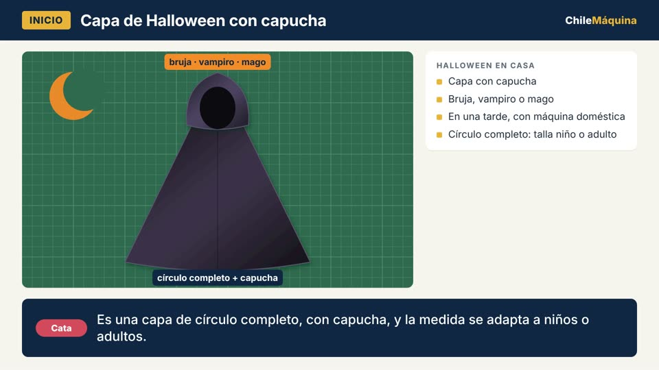

4:36
Descargar el PDF del tutorial
PDF con los materiales y los 7 pasos, listo para imprimir.
Capítulos del video
- 0:00 Tu primera polera en casa
- 0:38 Materiales y piezas
- 1:12 Prepara las máquinas
- 2:03 Paso 1: Une los hombros
- 2:27 Paso 2: Prepara la tira del cuello
- 3:01 Paso 3: Pega el cuello
- 3:29 Paso 4: Pega las mangas en plano
- 3:55 Paso 5: Cierra costados y mangas
- 4:21 Paso 6: Bastas con la colleretera
- 5:09 Paso 7: Remata y revisa
- 5:30 ¡Polera lista!
Lo que necesitas
Materiales
- Tela de punto (por ejemplo, jersey de algodón).
- Hilo de overlock en conos.
- Agujas para tejido de punto.
Máquinas
- Overlock BSQ 3250
- Colleretera Brother CV3440
Paso a paso
-
Paso 1: Une los hombros
Con la overlock, derecho con derecho. Si la tela es muy elástica, agrega cinta de hombro o elástico transparente. Ver en el video (2:03)
-
Paso 2: Prepara la tira del cuello
La tira mide entre el 80 % y el 90 % del contorno del escote: cerca del 90 % si es la misma tela, y entre 80 % y 85 % si es rib o una tela muy elástica. Ciérrala en un anillo, dóblala revés con revés y márcala en 4 puntos. Ver en el video (2:27)
-
Paso 3: Pega el cuello
Calza las marcas de la tira con las del escote y cose con la overlock estirando la tira. Opcional: asienta la costura con la colleretera. Ver en el video (3:01)
-
Paso 4: Pega las mangas en plano
Une las mangas a la sisa con la prenda abierta, antes de cerrar los costados. Ver en el video (3:29)
-
Paso 5: Cierra costados y mangas
Cose el costado y la manga de una sola pasada. Ver en el video (3:55)
-
Paso 6: Bastas con la colleretera
Cose por el derecho, usando el brazo libre, con separación de 3 mm o 6 mm, y en redondo. Ver en el video (4:21)
-
Paso 7: Remata y revisa
Lleva los hilos al revés y anúdalos. Ver en el video (5:09)
Preguntas frecuentes
¿Qué máquinas se usan para hacer una polera?
La Overlock BSQ 3250 arma la polera: une y remata las orillas. La Colleretera Brother CV3440 hace las bastas. Las dos vienen en el Pack Poleras en Casa y trabajan juntas porque la colleretera no corta la tela.
¿De qué largo se corta la tira del cuello de una polera?
Entre el 80 % y el 90 % del contorno del escote, medido sin estirar: cerca del 90 % si la tira es de la misma tela de la polera, y entre 80 % y 85 % si es rib acanalado o una tela muy elástica.
¿Las mangas se pegan antes o después de cerrar los costados?
Antes. Las mangas se pegan con la polera abierta, en plano. Después se cierran el costado y la manga de corrido, en una sola pasada.
¿Cómo se hacen las bastas con la colleretera?
La colleretera cose por el derecho de la tela. Usa el brazo libre para las mangas, el recubrimiento angosto de 3 mm o el ancho de 6 mm, y cose la basta de abajo en redondo. Al final pasa los hilos al revés y anúdalos.
Transcripción del video
Ver la transcripción completa
Tu primera polera en casa
Cata: ¡Hola! Bienvenidos a ChileMáquina. Hoy vamos a hacer una polera completa, de principio a fin.
Tomás: Y la vamos a hacer con el Pack Poleras en Casa: la overlock BSQ 3250 y la colleretera Brother CV3440.
Cata: La overlock arma la polera: une y remata las orillas. La colleretera hace las bastas, igual que en una polera de tienda.
Tomás: Ojo, que la colleretera no corta la tela. Por eso trabajan juntas.
Materiales y piezas
Cata: Necesitas tela de punto, por ejemplo jersey de algodón, hilo de overlock en conos y agujas para tejido de punto.
Tomás: Del molde salen cinco piezas: el delantero y la espalda, que se cortan con la tela doblada, las dos mangas, y una tira para el cuello.
Cata: La tira del cuello se corta con el estiramiento de la tela a lo largo de la tira. Así después la puedes estirar al coserla.
Tomás: Y marca los piquetes del molde: el centro del delantero, el centro de la espalda y el centro de la copa de la manga.
Prepara las máquinas
Tomás: Primero la overlock. La BSQ 3250 trabaja con dos, tres o cuatro hilos. Para unir la polera usamos cuatro hilos.
Cata: Su aguja es del sistema HA×1, también llamado 130/705H. Para tela de punto, mejor punta de bola.
Tomás: Y fíjate en el diferencial. Según su manual, en tejidos elásticos se sube a más de uno, para que la costura no quede ondulada.
Cata: La colleretera Brother CV3440 hace recubrimiento angosto de 3 mm o ancho de 6 mm, y también cadeneta.
Tomás: Para punto, usa agujas de colleretera con punta de bola. Y siempre prueba primero en un retazo de la misma tela.
Paso 1: Une los hombros
Cata: Paso 1: une los hombros con la overlock, derecho con derecho.
Tomás: Si tu tela es muy elástica, puedes coser encima una cinta de hombro o un elástico transparente, para que no se estiren con el uso.
Cata: Cose un hombro y sigue de corrido al otro, así ahorras hilo. Después cortas la cadena entre los dos.
Paso 2: Prepara la tira del cuello
Cata: Paso 2: la tira del cuello. Mide el contorno del escote, sin estirarlo.
Tomás: La tira tiene que ser más corta que el escote: entre un 80 y un 90 % de ese largo.
Cata: Si la tira es de la misma tela de la polera, usa cerca del 90 %. Si es rib acanalado, o una tela muy elástica, entre 80 y 85 %.
Tomás: Cierra la tira formando un anillo, dóblala a lo largo, revés con revés, y márcala en cuatro partes iguales.
Paso 3: Pega el cuello
Cata: Ahora marca también el escote en cuatro partes iguales. Esas marcas te guían.
Tomás: Calza las marcas de la tira con las del escote, derecho con derecho, y sujétalas con clips.
Cata: Cose con la overlock estirando la tira para que calce con el escote. Así la tira queda plana sobre la polera.
Tomás: Si quieres, después asientas la costura con la colleretera para una terminación de fábrica.
Paso 4: Pega las mangas en plano
Tomás: Paso 4: las mangas. Las pegamos con la polera abierta, en plano. Es más rápido y más fácil.
Cata: Calza el piquete del centro de la copa con la costura del hombro, derecho con derecho.
Tomás: Luego calzas las puntas de la manga con las de la sisa, y coses con la overlock de una punta a la otra.
Cata: Repite con la otra manga.
Paso 5: Cierra costados y mangas
Cata: Paso 5: da vuelta la polera al revés, y junta los costados y las mangas, derecho con derecho.
Tomás: Calza bien la costura de la axila, que coincidan las dos uniones.
Cata: Y cose de corrido, en una sola pasada, desde la basta de la polera hasta la punta de la manga.
Tomás: Repite al otro lado, y ya tienes la polera armada.
Paso 6: Bastas con la colleretera
Tomás: Paso 6, el que hace la diferencia: las bastas con la Brother CV3440.
Cata: Dobla la basta hacia el revés, al ancho que trae tu molde, y plánchala. Si tu tela es muy delgada, una cinta fusionable para punto ayuda a que no se ondule.
Tomás: La colleretera cose por el derecho de la tela. Las agujas quedan arriba y la puntada pasa sobre el borde doblado, por el revés.
Cata: Para las mangas usa el brazo libre de la máquina. Es justo para mangas y puños.
Tomás: Usa el recubrimiento angosto de 3 mm o el ancho de 6 mm, como te guste más.
Cata: Y la basta de abajo se cose en redondo: das la vuelta completa a la polera.
Paso 7: Remata y revisa
Cata: Paso 7: rematar. Los hilos de la colleretera no se rematan solos.
Tomás: Pasa los hilos hacia el revés y anúdalos, o éntralos en la costura con una aguja de lana.
Cata: Corta los hilos sueltos, revisa que las costuras estiren sin cortarse, y listo.
¡Polera lista!
Tomás: ¡Y quedó! Una polera con terminación de fábrica, hecha en tu casa.
Cata: Al final del video te mostramos cómo descargar gratis el PDF del tutorial, con todos los pasos y medidas.
Tomás: Y si tienes dudas con tu máquina, escríbenos a ChileMáquina. ¡Nos vemos en el próximo tutorial!
Productos relacionados
Fuentes
- Manual de usuario Overlock BSQ 3250 (hilos, aguja HA×1 / 130/705H, diferencial, largo y ancho de puntada).
- Ficha del Pack Poleras en Casa, chilemaquina.pro (función de cada máquina; CV3440: 3 o 6 mm, brazo libre).
- Brother USA, ficha CV3440 (tipos de puntada, brazo libre, diferencial). The Sewing Studio, ficha CV3440 (anchos 3,0 y 6,0 mm).
- Guía de agujas de colleretera, Centro de Enseñanza ChileMáquina (ELx705 / ELx705 SUK).
- Melly Sews, "How to sew a t-shirt using a serger" (orden de armado, mangas en plano, costados de corrido, problemas frecuentes).
- FreeSewing, instrucciones Teagan (hombros, cuello opcional asentado con colleretera, bastas).
- Life Sew Savory, "T-shirt neck binding" (tira 80–90 % del escote).
- Cashmerette, bastas con colleretera (coser por el derecho, cinta fusionable, rematar hilos por el revés).
Más tutoriales
¿Dudas con tu polera o con tu máquina?
Escríbenos por WhatsApp al +56 9 4549 4865 y te ayudamos.